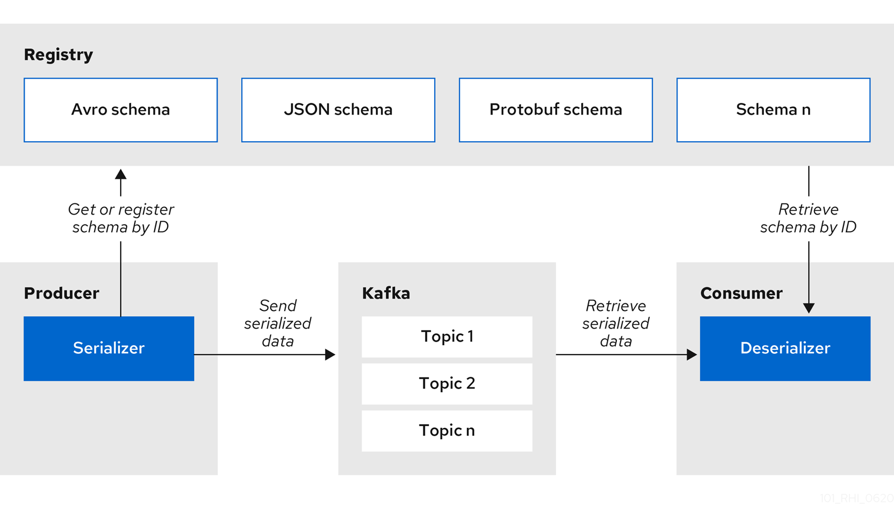

Kafka client serializers/deserializers

Figure 1. Apicurio Registry and Kafka client serializer/deserializer architecture
Apicurio Registry provides Kafka client serializers/deserializers (Serdes) to validate the following message types at runtime:
-
Apache Avro
-
Google protocol buffers
-
JSON Schema
The Apicurio Registry Maven repository and source code distributions include the Kafka serializer/deserializer implementations for these message types, which Kafka client developers can use to integrate with the registry. These implementations include custom io.apicurio.registry.utils.serde Java classes for each supported message type, which client applications can use to pull schemas from the registry at runtime for validation.